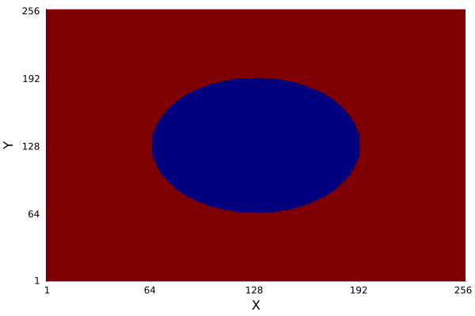

Effective Linear Elastic Material Tensor
In this example, we will find the parameters of an effective linear elastic material tensor for a heterogeneous 2D microstructure. The microstructure consists of a circular inclusion embedded in a matrix. The inclusion is stiffer and exhibits a lower Poisson ratio than the surrounding matrix.
Linear Elastic Constitutive Law
Using Voigt-notation, we can express the stress and strain tensors are represented as:
\[\boldsymbol{\varepsilon} = \begin{bmatrix} \varepsilon_{11} \\ \varepsilon_{22} \\ 2\varepsilon_{12} \end{bmatrix}, \quad \boldsymbol{\sigma} = \begin{bmatrix} \sigma_{11} \\ \sigma_{22} \\ \sigma_{12} \end{bmatrix}.\]
We can then express linear elasticity as:
\[\mathbb{C} \cdot \begin{bmatrix} \varepsilon_{11}\\ \varepsilon_{22}\\ 2\varepsilon_{12} \end{bmatrix} = \begin{bmatrix} \sigma_{11}\\ \sigma_{22}\\ \sigma_{12} \end{bmatrix},\]
with
\[\mathbb{C} = \begin{bmatrix} C_{11} & C_{12} & C_{13}\\ C_{21} & C_{22} & C_{23}\\ C_{31} & C_{32} & C_{33} \end{bmatrix}.\]
Our goal is to determine $\mathbb{C}$, such that it reproduces the macroscopic, average behaviour of the material:
\[\mathbb{C} \langle \boldsymbol{\varepsilon} \rangle = \langle \boldsymbol{\sigma} \rangle.\]
We will do so by applying three independent macroscopic strain states and evaluating the resulting averaged stress responses.
To begin we first define the microstructure geometry using an indicator function.
using FFTMechHomo
using LinearAlgebra
using Plots
dim = 2
L = 257
r = 64
centered_range(L::Int) = collect(1:L) .- (L÷2 + mod(L,2))
X = centered_range(L)
indicator = [x^2 + y^2 <= r^2 ? 1 : 2 for x in X, y in X]The resulting microstructure geometry can be displayed like this:
heatmap(
indicator;
color=:jet, colorbar=false,
xticks=[1, 64, 128, 192, 256],
yticks=[1, 64, 128, 192, 256],
xlabel="X", ylabel="Y"
)
We assign material properties according to the indicator function and construct a Microstructure.
mat1 = LinearIsotropicElastic{dim}(72000., 0.22)
mat2 = LinearIsotropicElastic{dim}(48000., 0.3)
microstructure = Microstructure(map(x -> x == 1 ? mat1 : mat2, indicator))Now we specify the discretization of the microstructure and the numerical scheme used to compute the strain field under an applied macroscopic strain.
disc = MoulinetSuquetDiscretization(microstructure)
α₀ = 1.5(mat1.μ + mat2.μ)
solver = BasicScheme(α₀, microstructure)Before computing the strain fields, we define three independent macroscopic load cases required to identify the effective material tensor.
ε0 = 0.01
macro_strains = [
MacroscopicStrain([ε0, 0, 0]),
MacroscopicStrain([0, ε0, 0]),
MacroscopicStrain([0, 0, ε0])
]We apply each macroscopic strain and compute the resulting stress fields. Note that, by definition of the FFT-based homogenization procedure, the volume-averaged strain equals the applied macroscopic strain, up to numerical errors, provided that the solution has converged.
ℂ = zeros(3,3)
for (i, macro_strain) in enumerate(macro_strains)
sol = solve(microstructure, disc, macro_strain, solver)
@assert sol.converged "Solver has not converged!"
ℂ[i,:] = sol.stress_avg ./ ε0
endFinally, we validate the homogenized material by verifying that the average stress response to a test strain is correctly reproduced using the identified material tensor stored in 'ℂ'.
test_strain = MacroscopicStrain([ε0, ε0, ε0])
test_sol = solve(microstructure, disc, test_strain, solver)
homogenized_stress = ℂ * test_strain.data
isapprox(test_sol.stress_avg, homogenized_stress; rtol=1e-3)trueThis page was generated using Literate.jl.